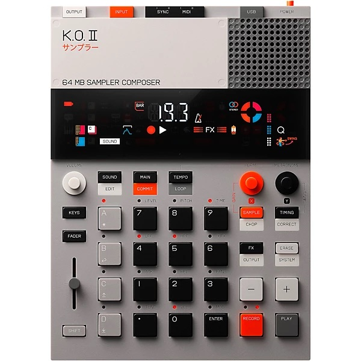

One of my biggest hobbies is music production, or creating music digitally on your computer. I have been doing this since the age of 10, primarily using FL Studio as a software. I have moved between electronic and hip-hop, and what I make now I would classify as trip-hop, a genre originating in Bristol, England in the 1990s, focused on creatng surreal and dreamy atmosphere with Hip-hop influenced beats. In the eleven years I have been producing, I have learned many things about the process. Learning how to structure a song, how to create the sound you want using synthesis and effects, learning how to sample, create an easy signal flow, and mixing and mastering. Producing has a fairly low barrier to entry, assuming you're willing to learn and shell out a couple hundred bucks on a digital audio workstation (DAW). While you can improve your toolkit with more plugins, sample packs and hardware, most DAWs do provide you the tools to do most things that you may want. That being said, buying more equipment can make the production process easier, inspire creativity, and make the experience more fun. Listed below is some hardware I have purchased.

The KO II
Back to main page